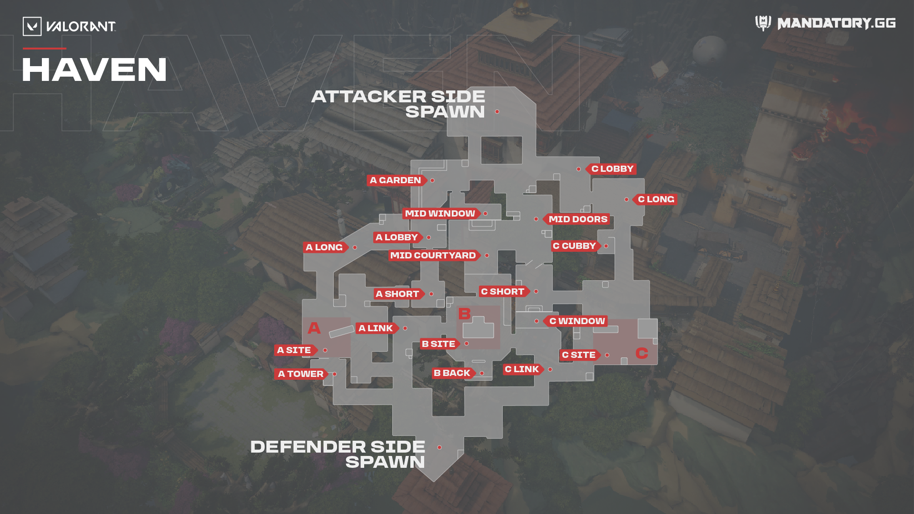
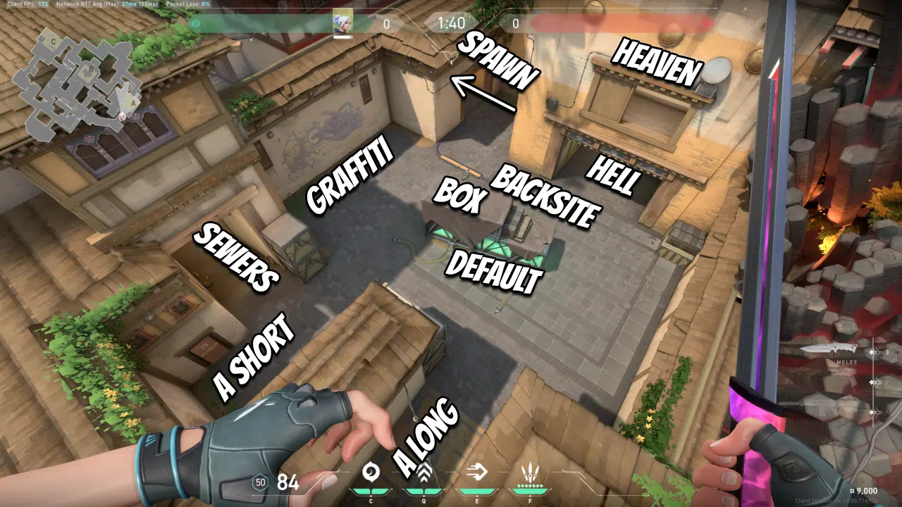
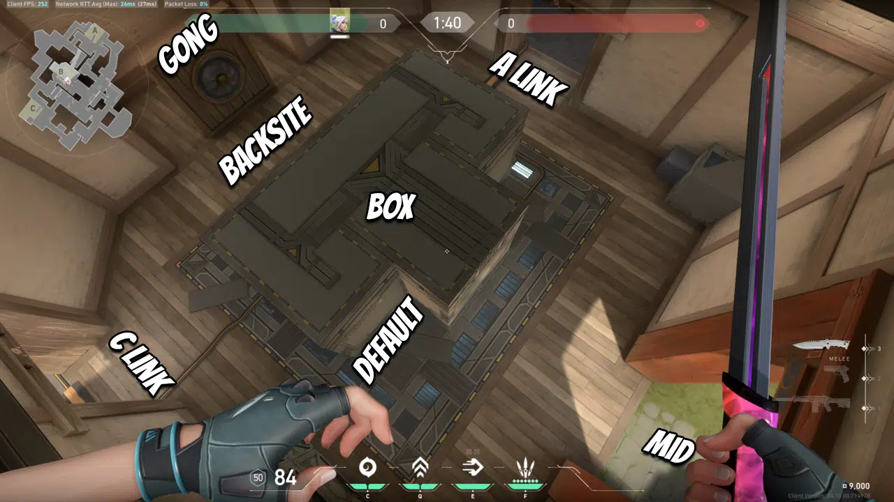
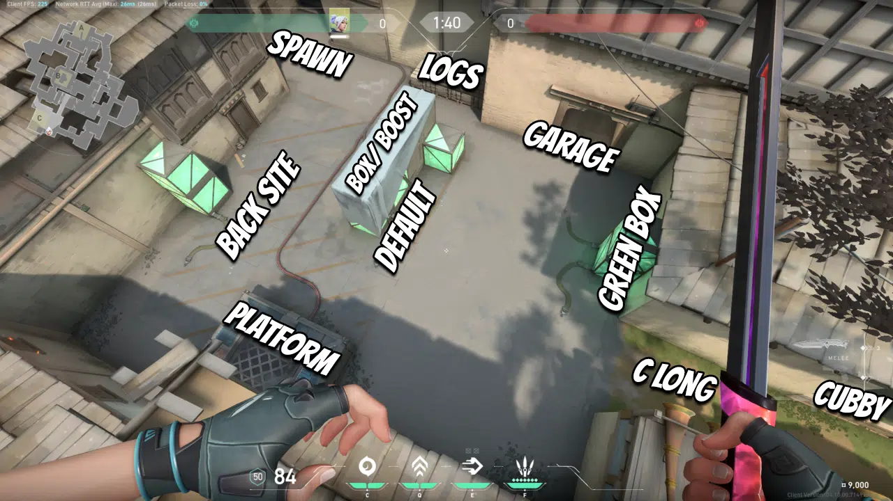

HAVEN
Haven is a very special map since there are 3 sites to plant the spike : A, B, and C. Defenders then have many strategic points to cover against attackers, and must cleverly distribute resources across the map.
Defenders then have many strategic points to cover against attackers, and must cleverly distribute resources across the map.
MAP TERMINOLOGY
CALLOUTS
A SITE
These are the basic callouts that you have to know when playing on A site in Haven. These are all fairly simple and don’t have many gimmicks or places once inside the site. Be careful of cheeky corners, though, especially when entering the site. These are common places to play in if you have a shorty or other shotguns in hand.
B SITE
B site is the middle area that connects directly to the A and C sites. Going through the B site is the quickest way to rotate from one end to the other. Generally, it’s easier to retake B site because you have three different entry points as a defender. It’s also a very small site, so there aren’t many hiding spots.
C SITE
Finally, we have the C site. The C site is the last site that is connected directly to the garage area. It has a long main entrance, commonly called “C long,” and you can also access the site by going inside the garage.